1020D17 Crankshaft oil seal FRONT COVER - R.R. and Replace gaskets for versions with oil pump on timing side crankshaft and heat exchanger - with engine removed
- Path
- Procedures > 10 ENGINE > 1020 CRANKCASE SUMP AND COVERS > 1020D OIL SEALS ON CRANKSHAFT > 1020D17 Crankshaft oil seal FRONT COVER - R.R. and Replace gaskets for versions with oil pump on timing side crankshaft and heat exchanger - with engine removed
- Kind
- repair procedure (removal / refitting; the operation number is the code)
- Applies to
- engines: 2.4 JTD 20V; all production periods
- Interactive page
- https://sloeber94.github.io/elrnDB-lThss/en/#/851295
Applies to: engines: 2.4 JTD 20V; all production periods
 Removing
Removing
 Refitting
Refitting1. Fit the flywheel lock in the housing in the engine block.
 | Description | Code | Function |
|---|---|---|---|
1 | Flywheel lock | 1.860.846.001 | Prevent the rotation of the crankshaft |
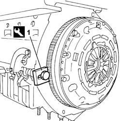
Applies to: engines: 2.4 JTD 20V; all production periods
1. Undo the fixing bolts (1a) and remove the crankshaft pulley (1b).
2. Undo the fixing bolt (2a) and remove the engine components single belt fixed tensioner (2b).
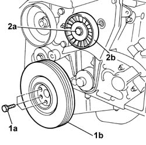
Applies to: engines: 2.4 JTD 20V; all production periods
1. Undo the fixing bolts (1a) and remove the timing guards (1b).
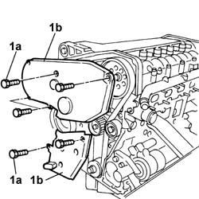
Applies to: engines: 2.4 JTD 20V; all production periods
1. Undo the fixing bolts (1a) and remove the engine oil dipstick pipe (1b).
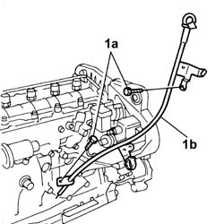
Applies to: engines: 2.4 JTD 20V; all production periods
1. Loosen the moving timing tensioner nut.
2. Remove the toothed timing belt.
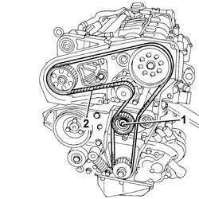
Applies to: engines: 2.4 JTD 20V; all production periods
- Rotate the engine through 180° on the overhaul stand.
1. Undo and remove the engine oil level sensor.
2. Undo the fixing bolts (2a) using the tools (2b).
| Description | Code | Function |
|---|---|---|---|
2b | Spanner | 1.860.833.001 | Loosen/Tighten front and rear crankcase sump bolts |
| Description | Code | Function |
|---|---|---|---|
2b | Spanner | 1.860.834.001 | Loosen/Tighten crankcase sump side bolts |
3. Cut the bead of sealant for the engine oil sump (3b) using the special tool (3a) and then remove it.
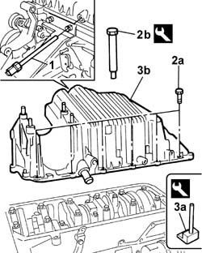
Applies to: engines: 2.4 JTD 20V; all production periods
1. Undo the fixing bolts and nut (1a) and remove the engine oil intake duct (1b).
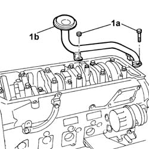
Applies to: engines: 2.4 JTD 20V; all production periods
- Rotate the engine through 180° on the overhaul stand.
1. Undo the fixing bolts (1a) and remove the engine components single belt automatic tensioner (1b).
2. Undo the fixing bolts (2a) and remove the automatic belt tensioner mounting bracket (2b).
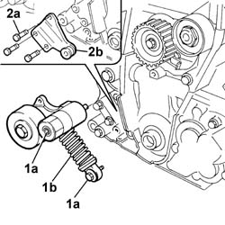
Applies to: engines: 2.4 JTD 20V; all production periods
1. Undo and remove the engine oil filter cartridge.
2. Undo the connector (2a) and remove the heat exchanger (2b).
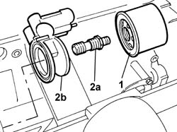
Applies to: engines: 2.4 JTD 20V; all production periods
1. Undo the fixing bolt (1a)and remove the toothed drive pulley (1b).
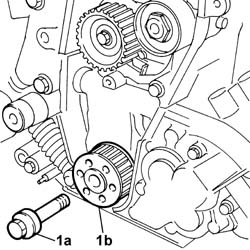
Applies to: engines: 2.4 JTD 20V; all production periods
1. Undo the fixing bolts (1a) and remove the crankshaft front cover with built in oil pump (1b).
- Remove the gasket underneath.
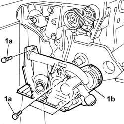
Applies to: engines: 2.4 JTD 20V; all production periods
Refitting
Removing- Rotate the engine through 180° on the overhaul stand.
- Fit the engine oil intake and gasket in place and tighten the fixing bolts and the nut.
 | Value - daNm | Fastening | Component | Ø |
|---|---|---|---|---|
. | 0.9 ÷ 1.3 | Bolt | OIL SECTION PUMP | M6 |
- Fit the crankshaft oil seal front cover with built in pump in place and tighten the fixing bolts.
| Value - daNm | Fastening | Component | Ø |
|---|---|---|---|---|
. | 0.9 ÷ 1.2 | Bolt | FRONT COVER CRANKSHAFT | M6 |
- Renew the engine oil sump sealant.
 | Description | Qty. | Component | Type | Classification |
|---|---|---|---|---|---|
. | Dow corning, 7091 | - | OIL SUMP | Silicone sealant |
- Fit the engine oil sump in position and tighten the fixing bolts.
| Value - daNm | Fastening | Component | Ø |
|---|---|---|---|---|
. | (Side bolts) 0.9 - 1.2 | Bolts | OIL SUMP | M6 |
| Value - daNm | Fastening | Component | Ø |
|---|---|---|---|---|
. | (Front and rear bolts) 2.3 - 3.3 | Bolts | OIL SUMP | M8 |
| Description | Code | Function |
|---|---|---|---|
. | Spanner | 1.860.833.001 | Loosen/Tighten front and rear crankcase sump bolts |
| Description | Code | Function |
|---|---|---|---|
. | Spanner | 1.860.834.001 | Loosen/Tighten crankcase sump side bolts |
- Fit the engine oil level sensor in place and tighten it.
- Rotate the engine through 180° on the overhaul stand.
- Fit the new seal.
- Fit the toothed drive pulley in position and tighten the fixing bolt.
| Value - daNm | Fastening | Component | Ø |
|---|---|---|---|---|
. | 32.9 ÷ 44.1 | Left hand bolt | DRIVE PULLEY(PULLIES) TIMING SYSTEM | M16 |
- Fit the heat exchanger in place and tighten the connector.
| Value - daNm | Fastening | Component | Ø |
|---|---|---|---|---|
. | 6 | Connector | ENGINE OIL HEAT EXCHANGER | - |
- Place the engine oil filter in its housing and tighten it to the recommended torque after having lubricated the seal with engine oil.
| Value - daNm | Fastening | Component | Ø |
|---|---|---|---|---|
. | 1.4 ÷ 2.0 | - | CARTRIDGE OIL FILTER | - |
- Fit the automatic belt tensioner mounting bracket in place and tighten the fixing bolts.
- Fit the automatic belt tensioner in position and tighten the fixing bolts.
- Remove the flywheel lock.
| Description | Code | Function |
|---|---|---|---|
. | Flywheel lock | 1.860.846.001 | Prevent the rotation of the crankshaft |
1. Remove the plug (1a) and fit the camshaft timing tool (1b) on the camshaft housing.
| Description | Code | Function |
|---|---|---|---|
1b | Templates | 1.870.896.900 | Engine tuning |
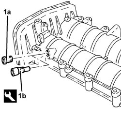
Applies to: engines: 2.4 JTD 20V; all production periods
1. Undo the bolt fixing the crankcase front cover shown in the diagram.
- Temporarily fit the toothed timing drive belt on the toothed drive pulley.
2. Fit the tool (2a) and fasten it using the calibrated screw (2b).
| Description | Code | Function |
|---|---|---|---|
2a | Template | 1.860.905.000 | Engine tuning |
| Description | Code | Function |
|---|---|---|---|
2b | Calibrated screw | 1.860.905.010 | Engine tuning |
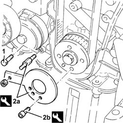
Applies to: engines: 2.4 JTD 20V; all production periods
1. Fully fit the toothed timing drive belt.
2. Use a screwdriver for leverage in the opening (2a) until the reference for the tensioner (2b) is aligned with the opening reference (2c) and, in this position, tighten the nut (2d) for the belt tensioner to the recommended torque.
| Value - daNm | Fastening | Component | Ø |
|---|---|---|---|---|
3d | 4.6 ÷ 6.6 | Nut | MOBILE TIMING TENSIONER | M10 |
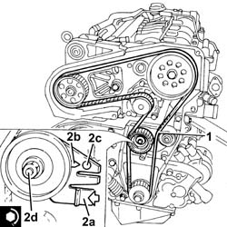
Applies to: engines: 2.4 JTD 20V; all production periods
- Tighten the bolt fixing the exhaust side camshaft drive pulley to the recommended torque.
| Value - daNm | Fastening | Component | Ø |
|---|---|---|---|---|
. | 12 | Bolt | TIMING DRIVEN PULLIES | M12 |
- Remove the timing tools.
| Description | Code | Function |
|---|---|---|---|
. | Template | 1.860.905.000 | Engine tuning |
| Description | Code | Function |
|---|---|---|---|
. | Calibrated screw | 1.860.905.010 | Engine tuning |
- Rotate the crankshaft through two revolutions.
- Check that the timing is correct once again by refitting the timing tools.
- Check that the tensioning referenceon the timing belt tensioner are aligned.
- Tighten the bolt fixing the crankcase front cover removed previously.
- Tighten the plug in the camshaft housing for fitting the exhaust side timing tool.
- Fit the engine oil dipstick tube and tighten the retaining bolts.
- Fit the timing belt guards and tighten the fixing bolts.
- Position the flywheel lock.
| Description | Code | Function |
|---|---|---|---|
. | Flywheel lock | 1.860.846.001 | Prevent the rotation of the crankshaft |
- Fit the crankshaft pulley in position and tighten the fixing bolts.
| Value - daNm | Fastening | Component | Ø |
|---|---|---|---|---|
. | 2.3 ÷ 3.3 | Bolt | CRANKSHAFT PULLEY | M8 |
- Fit the engine components single drive fixed tensioner and tighten the fixing bolt.
- Remove the flywheel lock.
| Description | Code | Function |
|---|---|---|---|
. | Flywheel lock | 1.860.846.001 | Prevent the rotation of the crankshaft |